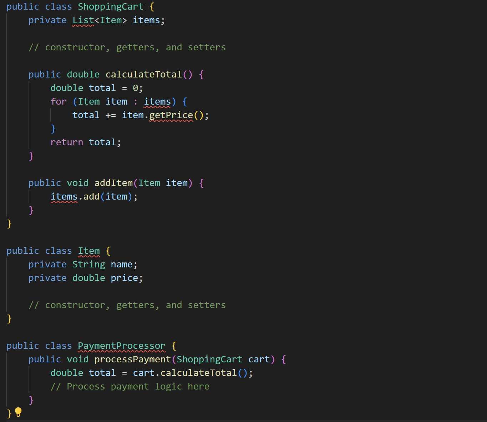
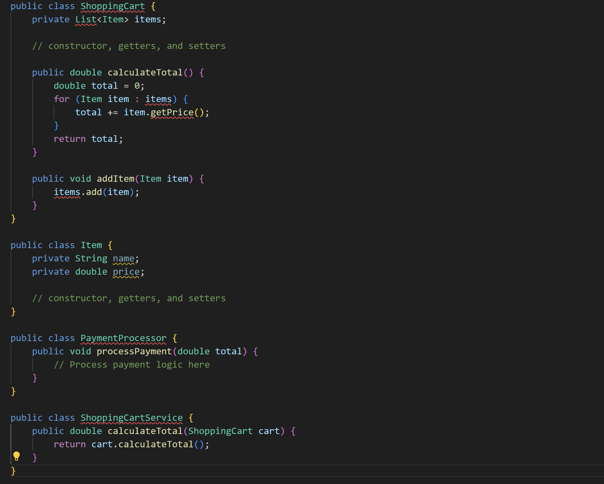

Contoh Code :
Before :

Pada contoh di atas, kelas PaymentProcessor memiliki akses langsung ke kelas ShoppingCart, bahkan memanggil metode calculateTotal() dari ShoppingCart. Ini menunjukkan "inappropriate intimacy" karena PaymentProcessor seharusnya tidak perlu mengetahui detail internal ShoppingCart.
After :

Pada kode yang diperbaiki, kelas PaymentProcessor tidak lagi memiliki akses langsung ke ShoppingCart. Sebaliknya, kelas ShoppingCartService bertanggung jawab untuk mengakses ShoppingCart dan menghitung total belanja. Ini membantu mengurangi "inappropriate intimacy" dengan memisahkan tanggung jawab dan meningkatkan pemisahan antara kelas-kelas.